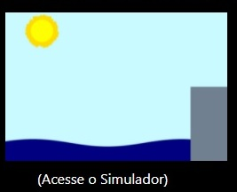

Home
(current)
Tópicos
Gravitação
Tensão do Vento
Pressão Atmosférica
Densidade
Sísmicas
Força de Coriolis
Força de Atrito
Como usar
Fale Conosco
GRAVITAÇÃO
A gravitação universal é uma lei descrita por Newton que aborda a relação de atração entre o sol e os planetas do sistema solar. Mas como ela pode ser usada para estimarmos as marés?
(ver mais)
